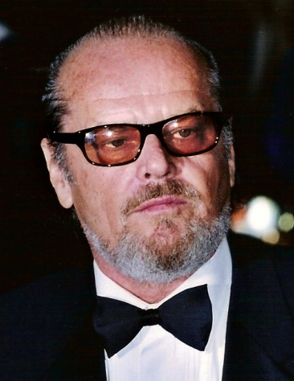

Брюс Вейн — багатий бізнесмен, який після вбивства своїх батьків у дитинстві вирішує стати месником. Він приймає ідентичність Бетмена, щоб боротися зі злочинністю в Готем-Сіті. Це складний персонаж, що страждає від особистих травм, але стає героєм для свого міста.

Джокер — головний антагоніст фільму. Колишній бандит Джек Нап'єр, який після нещасного випадку перетворюється на психічно нестабільного злочинця з білим обличчям, червоними губами та зеленими волоссям. Джокер є небезпечним і хаотичним ворогом, який прагне захопити Готем і занурити його в анархію.
Вікі Вейл — журналістка, яка приїздить до Готема, щоб розслідувати злочини, пов'язані з Бетменом. Вона є зацікавленою в Бетмені, але також закохується в Брюса Вейна, не знаючи, що він і є Бетмен. Її персонаж допомагає відкрити правду про Бетмена та Джокера.

Джеймс Гордон — комісар поліції Готема, чесний і відданий своєму місту поліцейський. У фільмі він зображений як важлива фігура у боротьбі зі злочинністю в Готемі, який не довіряє Бетмену на початку, але з часом починає співпрацювати з ним, визнаючи важливість його присутності для міста. Гордон представляє собою моральну стабільність і надію для Готема, який переживає хаос через злочинців і Джокера.